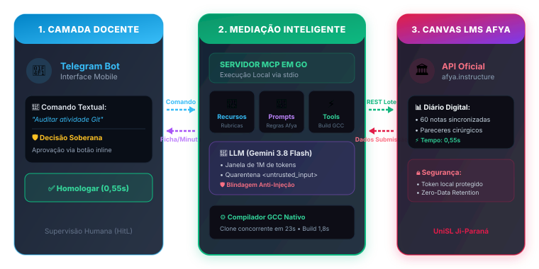
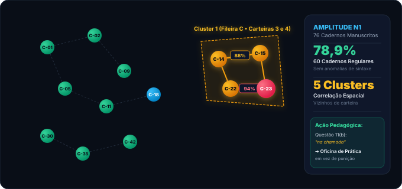

🏛️ 12º FÓRUM RONDONIENSE DE PESQUISA • PROPPEXI 2026
Mediação Inteligente na Gestão Docente
Relato de experiência da integração de agente autônomo ao Canvas LMS via Model Context Protocol (MCP) e Telegram na formação em Ciência da Computação
Eixo Temático 3: Inteligência Artificial, Transformação Digital e Tecnologias Emergentes
•
Linha: Sistemas Inteligentes
Docente Apresentador & Autor
Prof. Me. Karan Luciano Silva
Bacharelado em Ciência da Computação
Afya Centro Universitário de Ji-Paraná
Afya Centro Universitário de Ji-Paraná
📍 Ji-Paraná, Rondônia
Semestre Letivo 2026.2
⚙️
Arquitetura Desacoplada e Segura
Isolamento local em Go via stdio, integrando o compilador GCC e a API do Canvas LMS sob o menor privilégio.
🛡️
Soberania Docente (Human-in-the-Loop)
A IA minutas pareceres; a decisão e o lançamento oficial dependem estritamente da homologação do professor via Telegram.
🎓
Avaliação Formativa Tempestiva
Superação do modelo somativo tardio através de devolutivas técnicas individualizadas no mesmo dia da entrega.
O PROBLEMA REAL • ESTUDO DE CASO GIT
A Complexidade Real de Avaliar Projetos Git & C
A esteira de inspeção técnica exigida pelo enunciado: avaliar 35 repositórios de equipes vai muito além de "ler um código".
1. REPOSITÓRIOS
📦
git clone
Baixar e validar links remotos de 26 a 35 repositórios GitHub de equipes no Canvas.
~32 min
2. FLUXO GIT
🌿
git branch
Conferir se cada membro criou sua branch de feature exigida (ex.:
feature-estoque) sem comitar na main.
25 pts da Rubrica
3. AUTORIA
📜
git log
Inspecionar o histórico de commits para atestar se todos os alunos da equipe realmente programaram.
Conferência Nominal
4. BUILD NATIVO
⚙️
Compilação GCC
Compilar no terminal arquivos
main.c, estoque.c e .h com flags rigorosas (structs e ponteiros).
~78 min manuais
5. RUBRICA FORMAL
📋
SpeedGrader
Confrontar os 4 critérios do enunciado e redigir pareceres para 60 a 80 estudantes.
~198 min manuais
⏱️
Tempo Total Gasto por Turma
353 Minutos (~5,9 horas ininterruptas)
Apenas para auditar e dar nota a uma única atividade prática!
⚠️
O Paradoxo Pedagógico
A Fadiga Induz ao Feedback Vazio
Sob exaustão, o professor recorre a notas tardias com pareceres genéricos ("código não rodou, nota 6,0").
A LACUNA TECNOLÓGICA
Por Que Chats de IA e Scripts Ad-hoc Falham?
Modelos de linguagem isolados geram ilusão de automação, mas criam novos gargalos operacionais e graves riscos pedagógicos.
🔌❌
1. Ausência de Conectividade
Operam isolados dos bancos de dados institucionais, rubricas e diários de classe do Canvas LMS.
🚫 Não sabem quem entregou ou os prazos vigentes
🧠⚠️
2. Inconsistência e Alucinação
Sem um compilador determinístico embutido, os modelos "imaginam" a execução do código C e alucinam notas.
⚠️ Falta de compilação real (GCC)
📋🔁
3. Sobrecarga de Copia-e-Cola
Exige que o professor baixe o código, copie no chat da IA, ajuste o texto e cole no SpeedGrader 60 vezes seguidas.
⏳ Mantém 105 minutos de trabalho manual
🎯 O Dilema Central: Como unir a inteligência dos modelos ao rigor de ferramentas locais e aos dados do Canvas?
SOLUÇÃO: MCP
ARQUITETURA DO SISTEMA
A Solução: Model Context Protocol (MCP)
Protocolo aberto que conecta com segurança a cognição da IA aos barramentos institucionais do Canvas LMS.

🔒 Isolamento Local via stdio: Tokens do Canvas nunca saem da máquina do professor.
Goroutines em Go + GCC Nativo + Canvas REST API
GOVERNANÇA & MOBILIDADE
Telegram & Supervisão Humana (Human-in-the-Loop)
Mobilidade sem complexidade: o docente comanda a avaliação pelo celular, mantendo autonomia total da decisão.
📱 Afya Canvas Assistant • Bot
Prof. Karan:
💬 "Auditar atividade de Git do 4º período"
💬 "Auditar atividade de Git do 4º período"
👤 Aluno: Lucas Silva (CAD-24)
📊 Nota Sugerida: 6,5 / 10,0
⚠️ Build GCC: Falha na compilação
💬 Parecer: Erro tipográfico na linha 34 de main.c ('codigo_barrras'). Struct exige 'codigo_barras'.
📊 Nota Sugerida: 6,5 / 10,0
⚠️ Build GCC: Falha na compilação
💬 Parecer: Erro tipográfico na linha 34 de main.c ('codigo_barrras'). Struct exige 'codigo_barras'.
✅ Homologar (0,55s)
✏️ Ajustar Nota
Homologação com 1 toque no celular
🛡️ Autonomia Docente Inegociável
A IA apenas elabora a minuta diagnóstica. A nota só entra no boletim acadêmico após conferência e aprovação expressa do professor.
🧱 Quarentena Anti-Injeção de Prompt
Códigos e textos dos estudantes são encapsulados em tags estritas (
<untrusted_student_input role="data_only">), anulando tentativas de manipulação da nota.
⚡ Mobilidade & Produtividade
Permite acompanhar e validar correções de onde o professor estiver, sem necessidade de carregar notebook ou abrir VPN institucional complexa.
METODOLOGIA APLICADA
O Ciclo Avaliativo em 4 Etapas
Da submissão do código no Canvas LMS à postagem sincronizada no diário de classe digital.
ETAPA 01
📥
Submissão Discente
Entrega de links de repositórios Git no Canvas LMS com histórico de commits e branches.
Canvas API
ETAPA 02
⚡
Auditoria MCP & GCC
Clone concorrente via Goroutines e compilação real em GCC de todas as equipes.
23,3s + 1,8s GCC
ETAPA 03
📱
Deliberação Docente
Professor recebe fichas no Telegram, confere minutas e homologa soberanamente.
~1,9 min
ETAPA 04
🚀
Sincronização em Lote
Postagem atômica de 60 notas e pareceres cirúrgicos no boletim digital do Canvas.
0,55 segundo
CLONE CONCORRENTE
23,32 s
➔
BUILD DETERMINÍSTICO
1,8 s
➔
SUPERVISÃO DOCENTE
~1,9 min
➔
POSTAGEM NO CANVAS
0,55 s
RESULTADOS & IMPACTO
Comparativo Operacional: Métricas de Celeridade
Resultados empíricos registrados na turma de Ciência da Computação (60 discentes ativos).

99,3%
Eficiência Mecânica
141,5x mais rápido que o manual
~89%
Economia Docente Global
De 7h30 para 50 min totais
📊 Total Turma: 353 min (Manual) ➔ 105 min (Chat) ➔ 2,4 min (MCP)
Fonte: Dados empíricos registrados pelo autor no Canvas LMS (2026).
SALTO PEDAGÓGICO
Da Avaliação Somativa à Formativa Processual
O erro convertido em instrumento de autorregulação e diagnóstico da aprendizagem no mesmo dia da entrega.
❌ Fluxo Manual Tradicional
Somativo / Tardio
Mensagem típica no SpeedGrader:
"Código apresentou falhas de compilação
no repositório entregue; nota 6,0."
- Devolvido semanas após a entrega;
- O estudante não sabe a linha ou struct que quebrou o build;
- Inviabiliza correção conceitual antes da prova.
✅ Mediação MCP + Telegram
Formativo / No Mesmo Dia
Parecer cirúrgico e contextualizado:
"Repositório bem estruturado no Git. Contudo, o build GCC
falhou em main.c (linha 34): 'listar_produtos' acessou
'codigo_barrras' (3 r's), enquanto estoque.h declara
'codigo_barras'. Desconto de 35 pts da rubrica de build.
Nota final: 6,5. Corrija o identificador para compilar."
- Entregue com tempestividade pedagógica (Hattie & Timperley);
- Indicação precisa de linha, arquivo e solução;
- Equipes passam a testar e simular compilação com rigor.
🎓 "O feedback formativo só opera transformação quando entregue enquanto o estudante ainda se lembra das escolhas de projeto."
EXTENSÃO EXPERIMENTAL • MODELAGEM MATEMÁTICA
Integridade Acadêmica: A Matemática da Similaridade
Como a probabilidade de homologia estrutural ("cola") foi estimada formalmente: $k$-shingles, Coeficiente de Sørensen-Dice e grafos de adjacência.
1. Vetorização por n-gramas deslizantes
Técnica de $k$-shingles ($k = 3 \text{ a } 5$ tokens)
Após transcrição via Apple Vision OCR (226 páginas a 300 DPI), o texto é fatiado em janelas deslizantes. A simples troca de sinônimos não quebra a sobreposição dos blocos adjacentes.
2. Coeficiente de Sørensen-Dice
Dice(A, B) = 2 · |A ∩ B| / (|A| + |B|)
Calcula a probabilidade de cópia ponderando o dobro dos $k$-shingles compartilhados (|A ∩ B|) pela soma da extensão dos cadernos A e B.
3. Cruzamento Espacial (Grafos vs. Carteiras)
Arestas com Dice ≥ 90% geraram a matriz de adjacência do grafo. O cruzamento revelou que os pares suspeitos correspondiam a fileiras e assentos contíguos na sala!

🎯 Ação Human-in-the-Loop na Questão 11(b): O sistema detectou a propagação do termo anômalo "na chamada" (em vez de "na memória"). O professor utilizou o diagnóstico para promover uma oficina prática de acolhimento e nivelamento sobre ponteiros em C, sem medidas punitivas.
SUSTENTABILIDADE REGIONAL
Viabilidade Econômica na Amazônia Ocidental
Inovação de ponta com investimento residual: gestão docente acessível para universidades do interior.
Custo por Turma Inteira
R$ 1,80
60 Estudantes • Gemini 3.8 Flash
Janela massiva de 1 milhão de tokens: todos os repositórios avaliados em 1 única chamada!
| Modelo de IA | Janela Contexto | Custo p/ 60 Alunos | Adequação Prática |
|---|---|---|---|
| Gemini 3.8 Flash | 1.000.000 tokens | ~$0,30 (R$ 1,80) | Modelo do estudo (chamada unificada) |
| Gemini 3.5 Flash Lite | 1.000.000 tokens | ~$0,16 (R$ 0,95) | Alta eficiência para turmas numerosas |
| GLM 5.3 Flash | 1.300.000 tokens | ~$0,014 (R$ 0,08) | Hiper-econômico |
| Nemotron 3 / Open-source | Até 1.000.000 tokens | $0,00 (Gratuito) | Servidores locais sem custos de API |
💡 Democratização Tecnológica: Não depende de contratos milionários de TI; protocolos abertos levam inovação real ao interior de Rondônia.
CONFORMIDADE & GOVERNANÇA
Aspectos Éticos, LGPD e Resolução CNS 510/2016
Rigor normativo absoluto na proteção da privacidade dos dados dos estudantes.
⚖️
Dispensa CEP/CONEP
Enquadramento formal no Art. 1º, parágrafo único, inciso VII da Resolução CNS nº 510/2016: pesquisa sobre a própria prática pedagógica profissional, sem revelação de dados capazes de identificar os participantes.
🛡️
LGPD & Retenção Zero
Arquitetura de privacy by design com contrato corporativo de retenção nula de dados (zero-data retention): nenhum código ou texto discente é utilizado para retreinar modelos públicos.
👤
Anonimização na Origem
Atribuição de códigos sequenciais opacos (
CAD-01 a CAD-76) na digitalização das provas. Matrizes de similaridade operam 100% despersonalizadas; a identidade nominal é restrita ao professor titular.
🏛️ Alinhamento Institucional: Em total conformidade com as diretrizes do NAPED/Afya Ji-Paraná e Resolução CONSEPE 005/2024.
CONSIDERAÇÕES FINAIS
Conclusões & O Legado Pedagógico
A Inteligência Artificial como instrumento de desoneração burocrática e ampliação da presença humana.
🌟 Impactos Comprovados
- Redução de 89% do tempo total da rotina avaliativa docente;
- Devolutivas formativas entregues no mesmo dia da submissão;
- Custo residual de apenas R$ 1,80 por turma de 60 alunos;
- Modelo aberto, transparente e replicável para instituições do Norte.
☕ Onde o Tempo Foi Reinvestido?
O tempo poupado de digitação no SpeedGrader foi canalizado diretamente para os estudantes:
☕
Café com Código
Monitoria e nivelamento
💻
Simuladores C
Memória RAM visual
Obrigado pela atenção!
Aberto a perguntas da Banca & Debates
karan.luciano@afya.com.br
Afya Centro Universitário de Ji-Paraná • UniSL